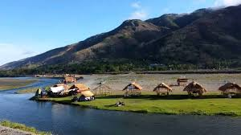
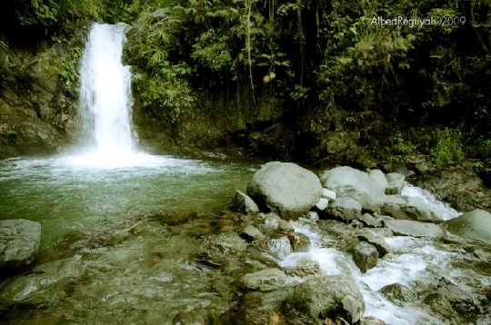
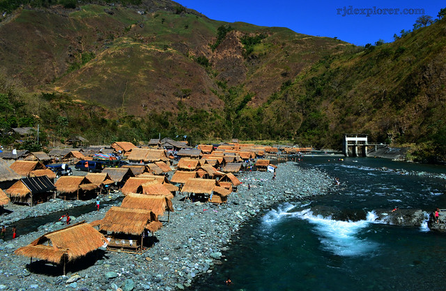
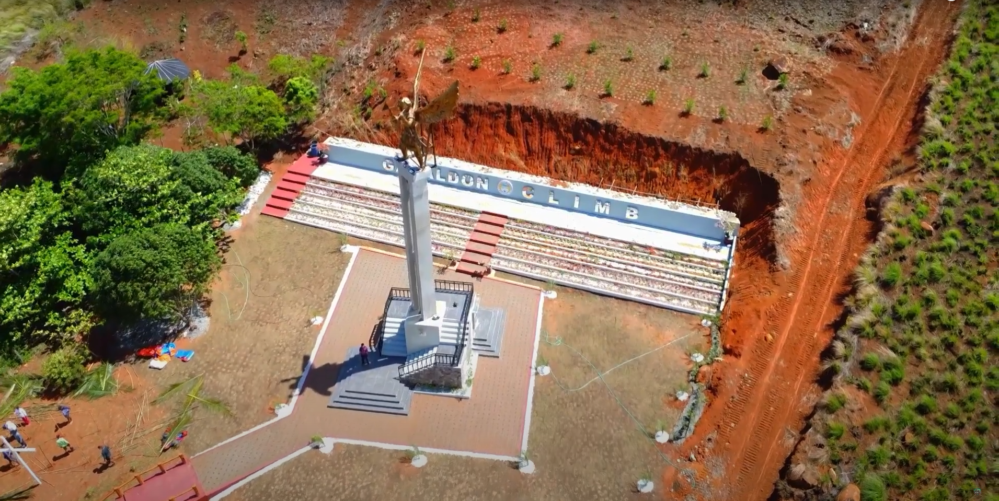
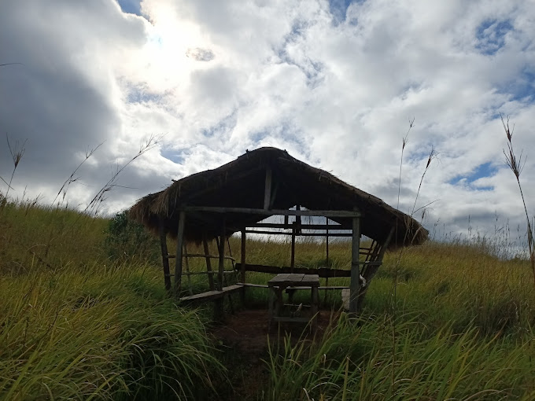

Tourist Attractions in Gabaldon
Discover the beauty and charm of nature and culture.
- 🌽 Calabasa River

- The Calabasa Festival celebrates the harvest of squash, showing the farming spirit of Gabaldon.
- Ipinagdiriwang dito ang kasaganahan ng kalabasa — simbolo ng masipag na magsasaka ng bayan.
- 💧 Gabaldon Falls

- A hidden paradise surrounded by nature and perfect for a cool dip.
- Likas na ganda na may malamig na tubig at luntiang paligid — ideal sa mga nature lover.
- 🌊 Dupinga River

- Cool, clean, and peaceful — a great place for family outings and bonding.
- Isa sa mga paboritong pasyalan para mag-picnic at mag-enjoy sa preskong ilog.
- ⛪ Gabaldon Climb – Archangel Site

- Spiritual and scenic — a pilgrimage site at the mountainside.
- Puno ng pananampalataya at katahimikan. Matatagpuan dito ang imahe ni Archangel sa tuktok.
- ⛰️ Mt. Sawi

- A famous hiking destination for solo travelers and groups.
- Sikat sa mga nais magmuni-muni at humugot. Pero sulit ang tanawin sa itaas!